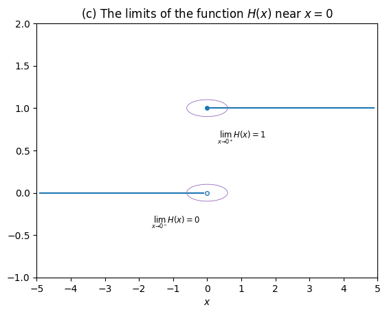
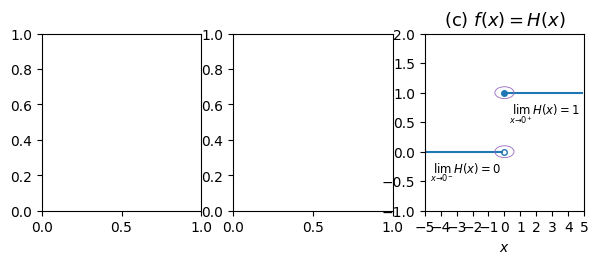
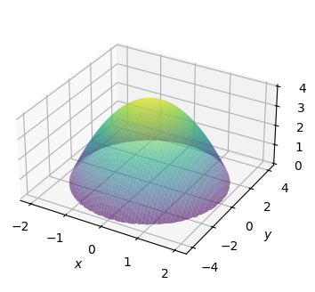
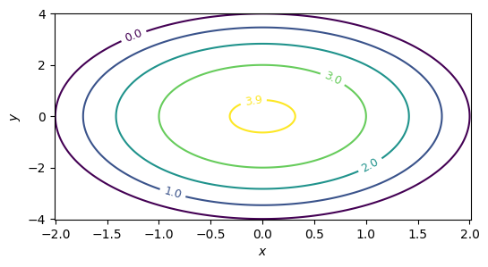
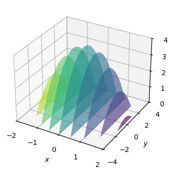
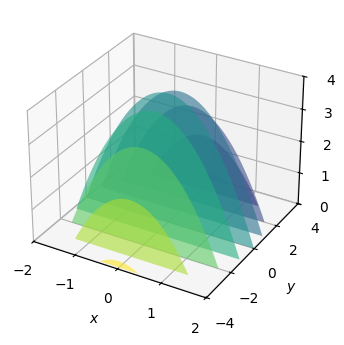
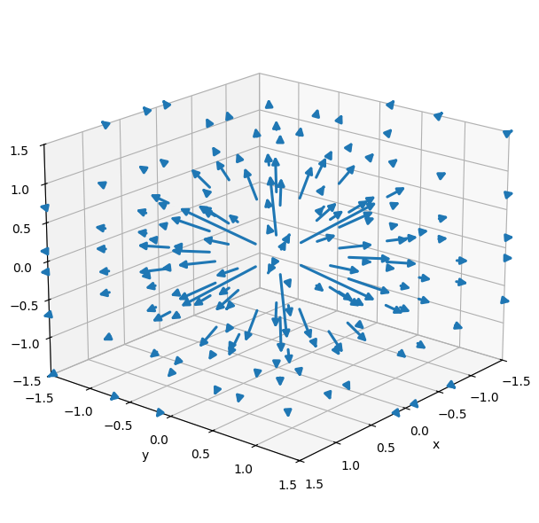

CUT MATERIAL from the Calculus tutorial#
Example: file download#
Suppose you’re downloading a \(720\)[MB] file from the internet to your computer. At \(t=0\) you click “Save as” to start the download. Let’s denote \(f(t)\) the disk space occupied by the partially-downloaded file at time \(t\).
Download rate#
The derivative function \(f^{\prime\!}(t)\), pronounced “\(f\) prime,” describes how the file size \(f(t)\) changes over time. In our example, \(f^{\prime\!}(t)\) is the download speed. If your download speed is \(f^{\prime\!}(t)=2\)[MB/s], then the file size \(f(t)\) will increase by 2[MB] each second. If you maintain this download speed, the file size will grow at a constant rate: \(f(0)=0\)[MB], \(f(1)=2\)[MB], \(f(2)=4\)[MB], \(\ldots\), \(f(100)=200\)[MB], and so on until \(f(360) = 720\)[MB], and the download is complete.
To estimate the time that remains before the download completes, assuming the current speed stays roughly constant, we can divide the amount of data that remains to be downloaded by the current download speed:
The bigger the derivative \(f^{\prime\!}(t)\), the faster the download will finish. If your internet connection were 10 times faster, the download would finish 10 times more quickly.
Let’s encode this formula as a Python function that takes the current file size \(f(t)\) and download rate \(f'(t)\) as inputs and computes the time remaining before the download completes.
fprime = 2 # MB/s
def time_remaining(current_size, fprime=2):
return (720 - current_size) / fprime
We can use this function to check the time remaining at start of the download.
time_remaining(current_size=0, fprime=2)
360.0
# After 200MB downloaded
time_remaining(current_size=200, fprime=2)
260.0
# After 200MB downloaded, but 10x download speed
time_remaining(current_size=200, fprime=20)
26.0
Inverse problem#
Let’s now consider the download scenario from the point of view of the modem that connects your computer to the internet. Any data you download comes through the modem, so the modem knows the download rate \(f^{\prime\!}(t)\)[MB/s] at all times during the download. The modem is separate from your computer, so it doesn’t know the file size \(f(t)\). Nevertheless, the modem can infer the file size at time \(t\) from the transmission rate \(f^{\prime\!}(t)\). Think about it—if the modem sees data flowing through at the rate of \(f^{\prime\!}(t)=2\)[MB/s], then it knows that the data accumulated on your computer is growing at the rate of \(2\)[MB] each second.We can describe the total file size accumulated between \(t=0\) and \(t=\tau\) (the Greek letter tau) as the integral of the download rate \(f^{\prime\!}(t)\) from \(t=0\) until \(t=\tau\):
The symbol \(\int\) is an elongated \(S\) that stands for sum. Indeed, the “integral of \(f^{\prime\!}(t)\) between \(0\) and \(\tau\)” is in some sense the sum of \(f^{\prime\!}(t)\) during each time instant \(dt\) between \(t=0\) and \(t=\tau\). To calculate the total accumulated file size, we split the time interval between \(t=0\) and \(t=\tau\) into many short time intervals \(dt\) of length \(1\)[s]. During each second, the file size grows by \(f^{\prime\!}(t)\,dt\), where \(f^{\prime\!}(t)\) is the download rate measured in [MB/s], and \(dt\) is a time interval of duration \(1\)[s].
def file_size(tau, fprime=2):
dt = 1 # 1 second time intervals
return sum([fprime*dt for t in range(0,tau)])
# After 10 seconds...
file_size(10, fprime=2)
20
# After 360 seconds...
file_size(360, fprime=2)
720
Example 5#
from ministats.calculus import plot_limit
from ministats.calculus import plot_ellipse
from ministats.calculus import plot_integral
# (c) Limits involving the Heaviside step function f(x) = H(x)
def H(x):
if x >= 0:
return 1
else:
return 0
ax = plot_limit(H, xlim=[[-5,0],[0,5]], eps=0.1, ylim=[-1,2])
ax.set_xticks([-5,-4,-3,-2,-1,0,1,2,3,4,5])
ax.set_xlabel("$x$")
ax.set_title("(c) The limits of the function $H(x)$ near $x=0$")
# continuous point (filled circle)
ax.plot(0, 1, marker='o', markersize=4, color='C0')
# discontinuous point (open circle)
ax.plot(0, 0, marker='o', markersize=4, markerfacecolor='none', markeredgecolor='C0')
# ellipse annotation (from the left)
plot_ellipse(ax, 0, 0, 1.2, 0.2, lx=-0.2, ly=-0.35, ha="right",
label=r"$\lim_{x \to 0^-} H(x) = 0$")
# ellipse annotation (from the right)
plot_ellipse(ax, 0, 1, 1.2, 0.2, lx=0.3, ly=0.65,
label=r"$\lim_{x \to 0^+} H(x) = 1$");

# FIGURES ONLY
import matplotlib.pylab as plt
from ministats.calculus import plot_limit
from ministats.calculus import plot_ellipse
fig, axs = plt.subplots(1, 3, figsize=(7,2.3))
TITLE_FONT_SIZE = 13
# (c) Limits involving the Heaviside step function f(x) = H(x)
def H(x):
if x >= 0:
return 1
else:
return 0
ax = plot_limit(H, xlim=[[-5,0],[0,5]], eps=0.15, ylim=[-1,2], ax=axs[2])
ax.set_xticks([-5,-4,-3,-2,-1,0,1,2,3,4,5])
ax.set_xlabel("$x$")
ax.set_title("(c) $f(x) = H(x)$", fontsize=TITLE_FONT_SIZE)
# continuous point (filled circle)
ax.plot(0, 1, marker='o', markersize=4, color='C0')
# discontinuous point (open circle)
ax.plot(0, 0, marker='o', markersize=4, markerfacecolor='none', markeredgecolor='C0')
# ellipse annotation (from the left)
plot_ellipse(ax, 0, 0, 1.2, 0.2, lx=-0.2, ly=-0.35, ha="right",
label=r"$\lim_{x \to 0^-} H(x) = 0$")
# ellipse annotation (from the right)
plot_ellipse(ax, 0, 1, 1.2, 0.2, lx=0.3, ly=0.65,
label=r"$\lim_{x \to 0^+} H(x) = 1$")
<Axes: title={'center': '(c) $f(x) = H(x)$'}, xlabel='$x$'>

Example 5 using SymPy#
import sympy as sp
from sympy import Heaviside
x = sp.symbols("x")
sp.limit(Heaviside(x,1), x, 0, "-")
---------------------------------------------------------------------------
ModuleNotFoundError Traceback (most recent call last)
Cell In[9], line 1
----> 1 import sympy as sp
2 from sympy import Heaviside
3
4 x = sp.symbols("x")
ModuleNotFoundError: No module named 'sympy'
sp.limit(Heaviside(x,1), x, 0, "+")
Multivariable calculus#
In multivariable calculus, we extend the ideas of differential and integral calculus to functions with multiple input variables.
Multivariable functions#
Consider the bivariate function \(f(x,y) = 4 - x^2 - \frac{1}{4}y^2\).
x, y = sp.symbols("x y")
fxy = 4 - x**2 - y**2/4
fxy
We can plot this function as a surface in a three-dimensional space.
import numpy as np
import matplotlib.pyplot as plt
xmax = 2.01
ymax = 4.02
xs = np.linspace(-xmax, xmax, 300)
ys = np.linspace(-ymax, ymax, 300)
X, Y = np.meshgrid(xs, ys)
Z = 4 - X**2 - Y**2/4
# Surface plot
fig = plt.figure(figsize=(4,4))
ax = fig.add_subplot(111, projection="3d")
Zpos = np.ma.masked_where(Z < 0, Z)
surf = ax.plot_surface(X, Y, Zpos,
# rstride=3, cstride=3,
alpha=0.6,
linewidth=0.1,
antialiased=True,
cmap="viridis")
ax.set_box_aspect((2, 2, 1))
ax.set_xlabel("$x$")
ax.set_ylabel("$y$")
ax.set_zlabel("$f(x,y)$");

We can trace level curves in the surface, to produce a “topographic map” of the surface where each level curve shows the points that are at a certain height.
# Contour plot
fig, ax = plt.subplots(figsize=(6,3))
cplot = ax.contour(X, Y, Z,
levels=[0,1,2,3,3.9],
cmap="viridis")
plt.clabel(cplot, inline=1, fontsize=9)
ax.set_xlabel('$x$')
ax.set_ylabel('$y$')
Text(0, 0.5, '$y$')

Partial derivatives#
sp.diff(fxy, x)
sp.diff(fxy, y)
The gradient operator#
[sp.diff(fxy, x), sp.diff(fxy, y)]
[-2*x, -y/2]
Partial integration#
from ministats.calculus import plot_slices_through_paraboloid
plot_slices_through_paraboloid(direction="x");

plot_slices_through_paraboloid(direction="y");

Double integrals#
The multivariable generalization of the integral \(\int_a^b f(x) \, dx\) that computes the total amount of \(f(x)\) between \(a\) and \(b\) is the multivariable integral of the form:
where \(R\) is called the region of integration and corresponds to some subset of the Cartesian plane \(\mathbb{R} \times \mathbb{R}\).
Applications of multivariable calculus#
Multivariable functions are used in machine learning, engineering, physics, and other sciences. The optimization techniques we learned for single variables functions generalize to functions with multiple inputs. Indeed, the gradient descent algorithm is often used to optimize functions with hundreds or thousands of inputs. Multivariable integrals appear in probability theory and statistics, where they are used to compute probabilities and expectations. Your basic knowledge of derivatives and integrals concepts from this tutorial will be very useful for understanding multivariable calculus topics.
Vector calculus#
Example: electric field around a positive charge#
The strength of the electric field \(\mathbf{E}\) at the point \(\mathbf{r} = (x,y,z)\) is
where \(k\) is Coulomb’s constant, \(r = \sqrt{x^2+y^2+z^2}\) is the distance from the origin, and \(\hat{\mathbf{r}} = \frac{\mathbf{r}}{r}\) is a unit vector in the same direction as \(\mathbf{r}\).
from ministats.calculus import plot_point_charge_field
plot_point_charge_field(elev=20, azim=40, grid_lim=1.5, n_points=6);

Vector calculus derivatives#
The derivative operator \(\nabla\) (nabla) is defined as \(\nabla = \big( \frac{\partial}{\partial x}, \frac{\partial}{\partial y}, \frac{\partial}{\partial z} \big)\).
The divergence of the vector field \(\mathbf{F}\) is computed by taking the “dot product” of \(\nabla\) and the vector field \(\mathbf{F} = (F_x, F_y, F_z)\):
The divergence tells us if the field \(\mathbf{F}\) is acting as a “source” or a “sink” at the point \((x,y,z)\).
The curl of the vector field \(\mathbf{F}\) is defined as the “cross product” of \(\nabla\) and the vector field \(\mathbf{F} = (F_x, F_y, F_z)\):
The curl tells us the rotational tendency of the vector field \(\mathbf{F}\).
Vector calculus integrals#
Path integrals#
The concept of a vector path integral is denoted \(\int_C \mathbf{F}(\mathbf{r}) \cdot d\mathbf{r}\), where \(C\) is some curve in three dimensional space, and \(d\mathbf{r}\) describes a short step along this curve. This integral computes the total action of the vector field \(\mathbf{F}\) in the direction along the curve \(C\).
Surface integrals#
The vector surface integral is denoted \(\iint_S \mathbf{F}(\mathbf{r}) \cdot d\mathbf{S}\), where \(S\) is some surface in three dimensional space, and \(d\mathbf{S}\) is a small “piece of the surface.” This integral computes the total flux of the vector field \(\mathbf{F}\) flowing through the surface \(S\).
Applications of vector calculus#
Vector calculus is used in physics and electrical engineering.
Taylor series of \(e^x\)#
import sympy as sp
x, k = sp.symbols("x k")
# first derivative of e^x at x=0
sp.diff(sp.exp(x), x, 1).subs({x:0})
# second derivative of e^x at x=0
sp.diff(sp.exp(x), x, 2).subs({x:0})
# fifth derivative of e^x at x=0
sp.diff(sp.exp(x), x, 5).subs({x:0})
exp_c_k = x**k / sp.factorial(k)
sp.Sum(exp_c_k, (k,0,7))
sp.Sum(exp_c_k, (k,0,7)).doit()
sp.summation( exp_c_k.subs({x:0}), (k,0,sp.oo))
This is the value \(\exp(0) = e^0 = 1\).
We can also compute \(e^5\):
sp.summation( exp_c_k.subs({x:5}), (k,0,sp.oo))
Bonus question#
Compute the definite integral \(\int_{-\infty}^\infty e^{-x^2}\,dx\)
numerically using the quad function.
import numpy as np
from scipy.integrate import quad
def expxsq(x):
return np.exp(-x**2)
quad(expxsq, a=-np.inf, b=np.inf)[0]
1.7724538509055159